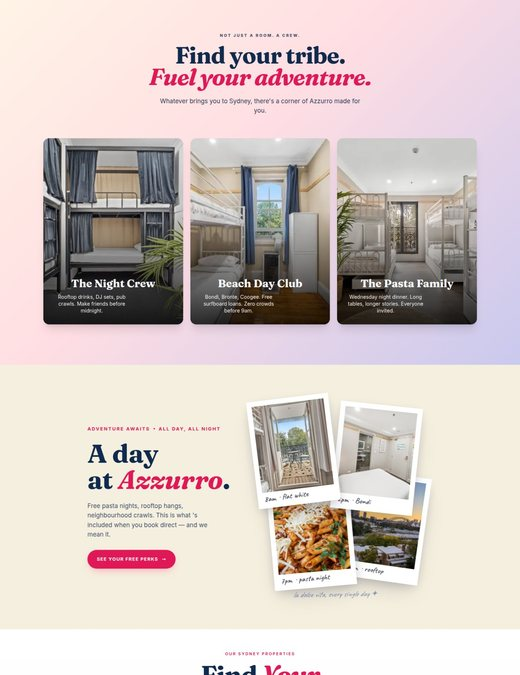
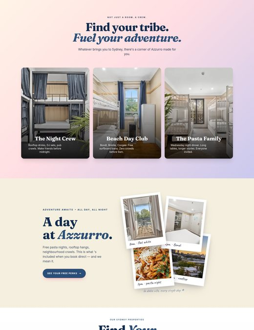
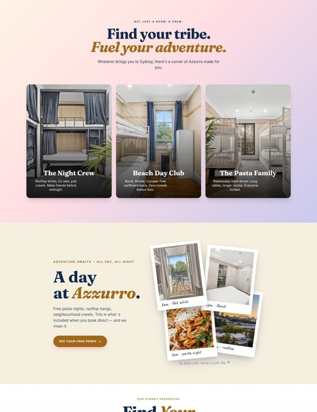
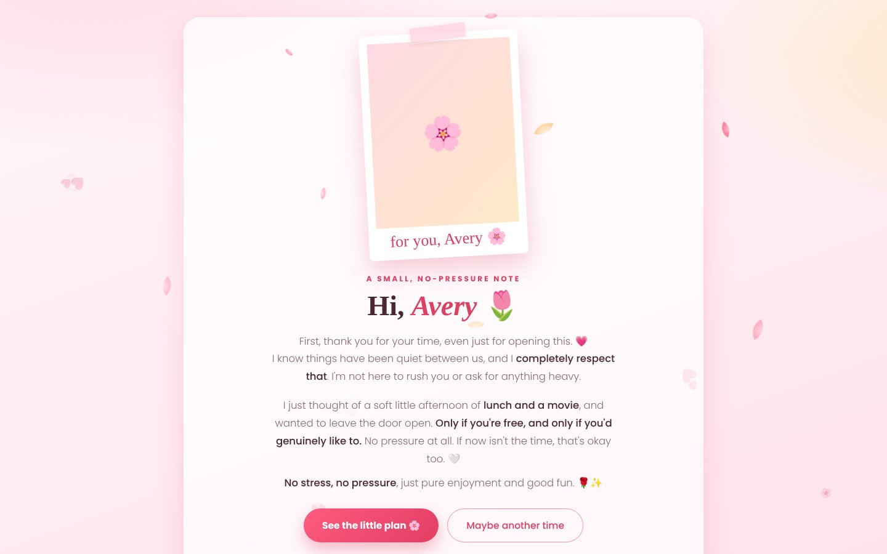
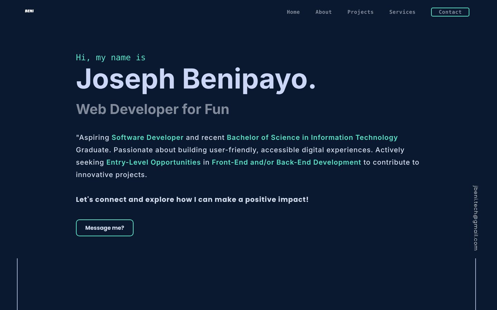
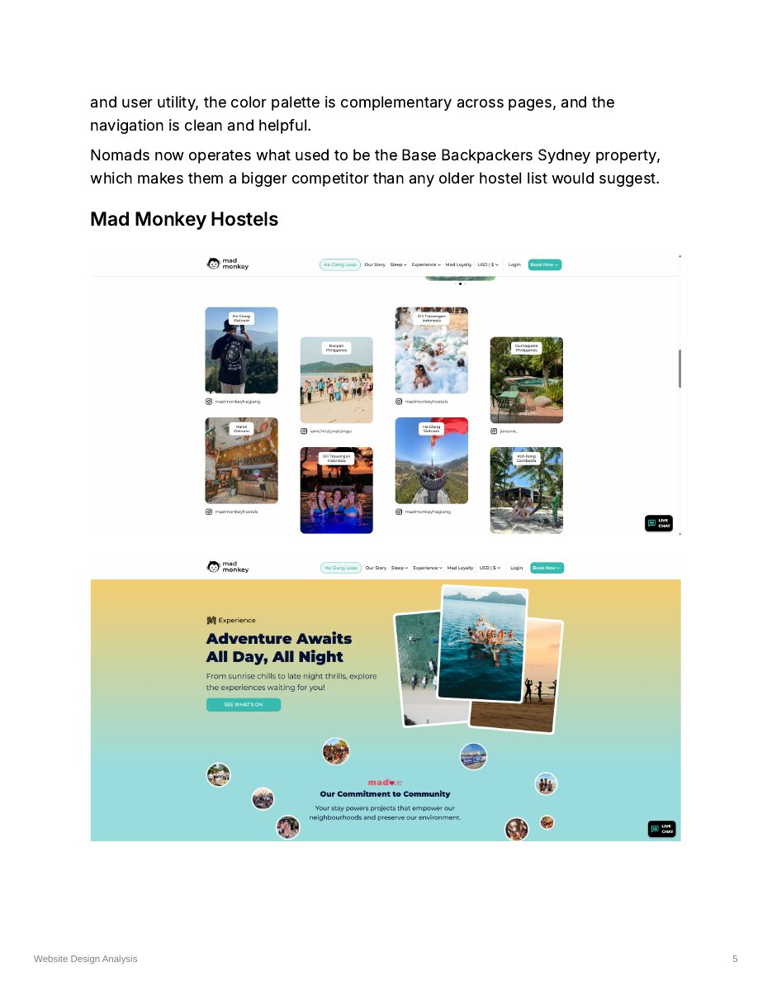
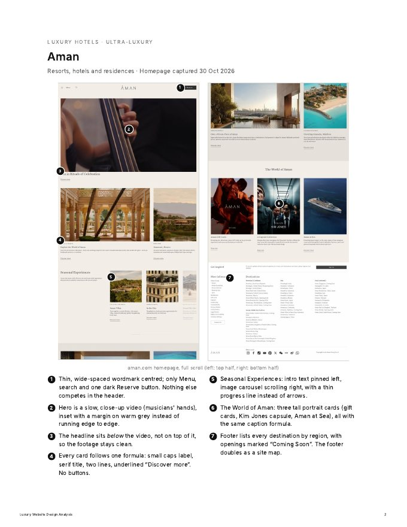
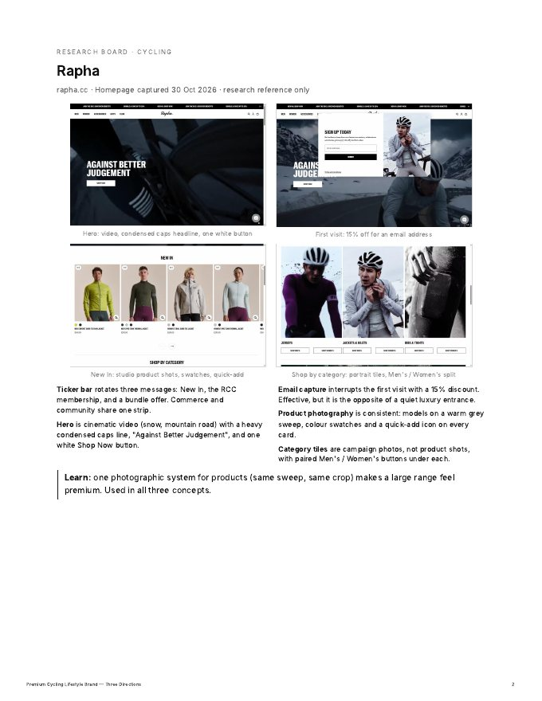

01Azzurro Hotels — Website
Hospitality · Sydney, Australia · 20264Pages designed & built
12Palettes explored
CTRTracked per palette
1Marketing dashboard
I'm Beni. I design websites, Meta ads and email campaigns, use AI to research and iterate faster, then build and test the work myself, backed by three years of shipping production code.


— Where design meets bookings





— Made for the love of it
Cycling: three brands, one obsession.
I've been hooked on bikes since I was a kid, and reading the cycling manhwa Wind Breaker made me want to design for the sport. So I built three cycling brands from scratch, each with its own identity, website and matching email, and each with a different idea of what a cycling brand can be. Every design below is live: click through to the real pages.


— The engineer half
Design that ships, because I can build it.
Three years of production code in Ruby on Rails and Python/Django means my designs come with working front-ends, dashboards and tests. These are side projects I designed and built end to end.
A web app that predicts a patient's chronic kidney disease risk from lab results, with separate patient and staff logins. Before release I ran a full security and quality review of my own code, adding missing input validation and fixing an insecure logging setup.
A Discord bot that turns a Notion database into a ticket tracker: create, rename, re-status and close tasks from chat. I found and fixed a race condition where two people could get the same task number, by serialising creation with an asyncio lock, and added admin-controlled permissions.

A soft, no-pressure invitation built as one self-contained page: a polaroid intro, a gentle plan, then a picker for the movie, day and showtime. Kind copy first, with a playful "Maybe another time" button that never pushes.

My first portfolio, from when I was job-hunting as a developer straight out of university. Hand-coded and responsive. It's where this design-first version started.
— Study first, design second
I research before I design, and I use AI to go further, faster.
Every project starts with an audit of what the best brands already do. AI helps me gather, compare and organise references quickly, so more of my time goes into the decisions and the design itself.

The competitor audit behind the Azzurro website: Wake Up!, Nomads, Mad Monkey, Zoku and more, with ratings, what to borrow and a booking-engine check.

How Aman, Four Seasons and Rosewood signal luxury online, annotated screen by screen with weighted ratings.

Rapha, MAAP and luxury references that shaped ORDRE, SLIPSTREAM and 0500, with strategy and a scored comparison.
— From code to craft
Open to remote design work: websites, Meta ads, email campaigns and brand identity. The quickest way to reach me is email.